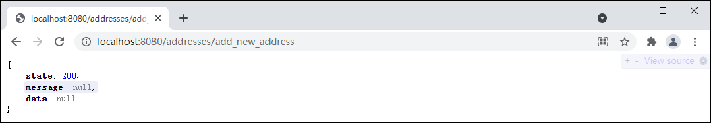
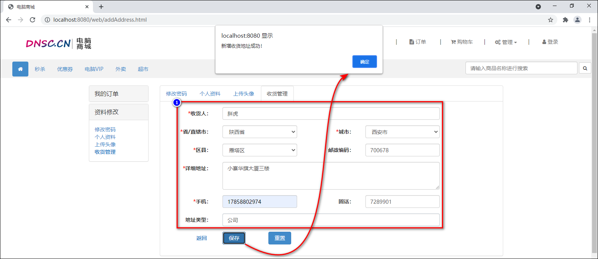
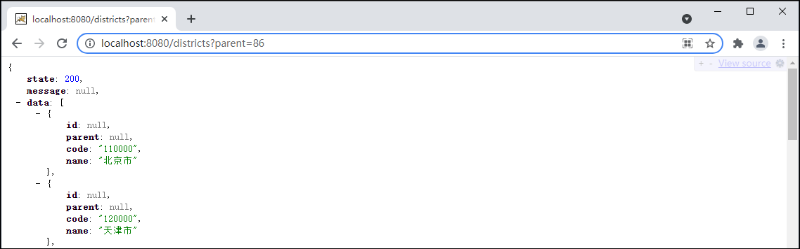
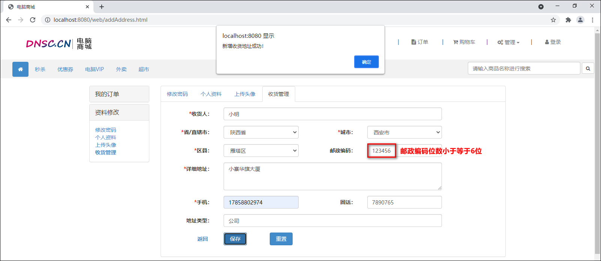
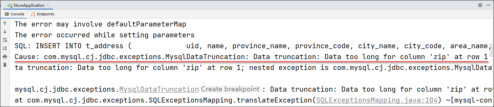
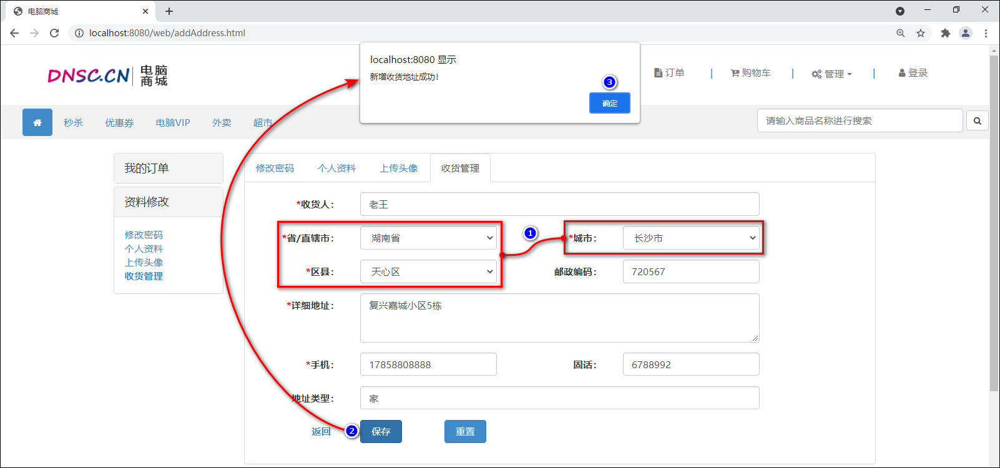
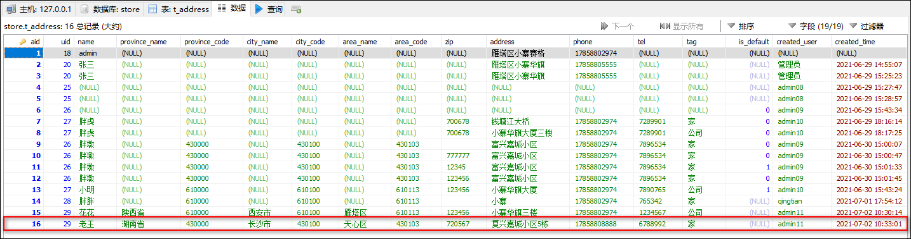
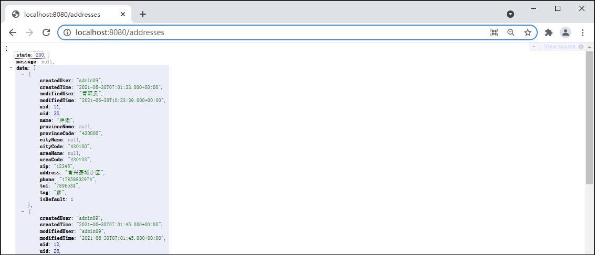
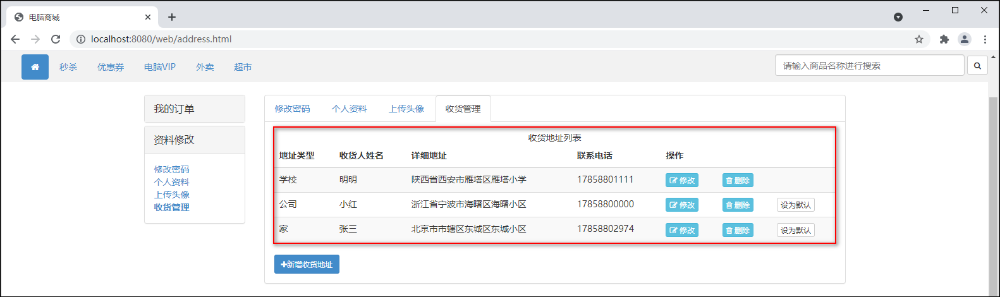
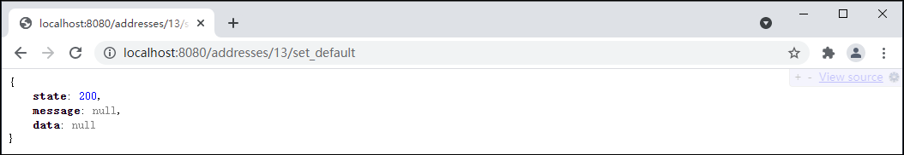

新增收货地址 1 新增收货地址-创建数据表 1.使用use命令先选中store数据库。
2.在store数据库中创建t_address用户数据表。
1 2 3 4 5 6 7 8 9 10 11 12 13 14 15 16 17 18 19 20 21 22 CREATE TABLE t_address (
2 新增收货地址-创建实体类 创建com.cy.store.entity.Address新增收获地址的实体类，继承自BaseEntity类，在类中声明与数据表中对应的属性，添加Getters and Setters方法，基于唯一标识aid生成hashCode()和equals()方法。
1 2 3 4 5 6 7 8 9 10 11 12 13 14 15 16 17 18 19 20 21 22 package com.cy.store.entity;public class Address extends BaseEntity implements Serializable {private Integer aid;private Integer uid;private String name;private String provinceName;private String provinceCode;private String cityName;private String cityCode;private String areaName;private String areaCode;private String zip;private String address;private String phone;private String tel;private String tag;private Integer isDefault;
3 新增收货地址-持久层 3.1 各功能的开发顺序 关于收货地址数据的管理，涉及的功能有：增加，删除，修改，设为默认，显示列表。这些功能的开发顺序为：增加-显示列表-设为默认-删除-修改。
3.2 规划需要执行的SQL语句 增加收货地址的本质是插入新的收货地址数据，需要执行的SQL语句大致是：
1 INSERT INTO t_address (除了aid以外的字段列表) VALUES (匹配的值列表)
后续在处理业务时，还需要确定“即将增加的收货地址是不是默认收货地址”；可以设定规则“用户的第1条收货地址是默认的，以后添加的每一条都不是默认的”；要应用该规则，就必须知道“即将增加的收货地址是不是第1条”，可以“根据用户id统计收货地址的数量”，如果统计结果为0，则即将增加的就是该用户的第1条收货地址，如果统计结果不是0，则该用户已经有若干条收货地址了，即将增加的就一定不是第1条。关于统计的SQL语句大致是：
1 SELECT count(*) FROM t_address WHERE uid=?
一般电商平台都会限制每个用户可以创建的收货地址的数量，如“每个用户最多只允许创建20个收货地址”，也可以通过以上查询来实现。
3.3 接口与抽象方法 创建com.cy.store.mapper.AddressMapper接口，并在接口中添加抽象方法。
1 2 3 4 5 6 7 8 9 10 11 12 13 14 15 16 17 18 19 package com.cy.store.mapper;import com.cy.store.entity.Address;public interface AddressMapper {insert (Address address) ;countByUid (Integer uid) ;
3.4 配置SQL映射 1.在src/main/resources/mapper文件夹下复制粘贴得到AddressMapper.xml映射文件，修改根节点mapper的namespace属性的值为com.cy.store.mapper.AddressMapper，并在根节点中配置pojo类属性与数据库中表的字段映射。
1 2 3 4 5 6 7 8 9 10 11 12 13 14 15 16 17 18 19 20 <?xml version="1.0" encoding="UTF-8" ?> <!DOCTYPE mapper PUBLIC "-//mybatis.org//DTD Mapper 3.0//EN" "http://mybatis.org/dtd/mybatis-3-mapper.dtd" > <mapper namespace ="com.cy.store.mapper.AddressMapper" > <resultMap id ="AddressEntityMap" type ="com.cy.store.entity.Address" > <id column ="aid" property ="aid" /> <result column ="province_code" property ="provinceCode" /> <result column ="province_name" property ="provinceName" /> <result column ="city_code" property ="cityCode" /> <result column ="city_name" property ="cityName" /> <result column ="area_code" property ="areaCode" /> <result column ="area_name" property ="areaName" /> <result column ="is_default" property ="isDefault" /> <result column ="created_user" property ="createdUser" /> <result column ="created_time" property ="createdTime" /> <result column ="modified_user" property ="modifiedUser" /> <result column ="modified_time" property ="modifiedTime" /> </resultMap > </mapper >
2.在AddressMapper.xml映射文件的根节点中配置以上两个抽象方法的映射。
1 2 3 4 5 6 7 8 9 10 11 12 13 14 15 16 17 18 19 20 21 <insert id ="insert" useGeneratedKeys ="true" keyProperty ="aid" > </insert > <select id ="countByUid" resultType ="java.lang.Integer" > </select >
3.在src/test/java下创建com.cy.store.mapper.AddressMapperTests测试类，在类定义之前添加测试的两个注解，在类中编写并执行以上两个抽象方法的测试。
1 2 3 4 5 6 7 8 9 10 11 12 13 14 15 16 17 18 19 20 21 22 23 24 25 26 27 28 29 30 31 32 package com.cy.store.mapper;import com.cy.store.entity.Address;import org.junit.Test;import org.junit.runner.RunWith;import org.springframework.beans.factory.annotation.Autowired;import org.springframework.boot.test.context.SpringBootTest;import org.springframework.test.context.junit4.SpringRunner;@RunWith(SpringRunner.class) @SpringBootTest public class AddressMapperTests {@Autowired private AddressMapper addressMapper;@Test public void insert () {Address address = new Address ();18 );"admin" );"17858802974" );"雁塔区小寨赛格" );Integer rows = addressMapper.insert(address);"rows=" + rows);@Test public void countByUid () {Integer uid = 18 ;Integer count = addressMapper.countByUid(uid);"count=" + count);
4 增收货地址-业务层 4.1 规划异常 1.无论用户将要增加的收货地址是不是默认收货地址，都需正常增加。即通过countByUid()方法统计的结果不管是不是0，都不能代表是错误的操作。
2.在执行插入收货地址数据之前，需判断countByUid()方法返回值是否超出上限值，如果超出上限值则抛AddressCountLimitException异常。
3.在执行插入数据时，还可能抛出InsertException异常，此异常无需再次创建。
4.创建com.cy.store.service.ex.AddressCountLimitException类后，需继承自ServiceException类。
1 2 3 4 5 6 package com.cy.store.service.ex;public class AddressCountLimitException extends ServiceException {
4.2 接口与抽象方法 创建com.cy.store.service.IAddressService业务层接口，并添加抽象方法。
1 2 3 4 5 6 7 8 9 10 11 12 13 package com.cy.store.service;import com.cy.store.entity.Address;public interface IAddressService {void addNewAddress (Integer uid, String username, Address address) ;
4.3 实现抽象方法 1.创建com.cy.store.service.impl.AddressServiceImpl业务层实现类，在类定义之前添加@Service注解，并实现IAddressService接口，最后在类中添加持久层对象并使用@Autowired注解修饰。
1 2 3 4 5 6 7 8 9 10 11 12 13 14 15 16 17 package com.cy.store.service.impl;import com.cy.store.entity.Address;import com.cy.store.mapper.AddressMapper;import com.cy.store.service.IAddressService;import org.springframework.beans.factory.annotation.Autowired;import org.springframework.stereotype.Service;@Service public class AddressServiceImpl implements IAddressService {@Autowired private AddressMapper addressMapper;@Override public void addNewAddress (Integer uid, String username, Address address) {
2.分析重写的addNewAddress(Integer uid, String username, Address address)抽象方法中的业务逻辑。
1 2 3 4 5 6 7 8 9 10 11 12 13 14 @Override public void addNewAddress (Integer uid, String username, Address address) {
3.addNewAddress(Integer uid, String username, Address address)方法的具体代码实现。
1 2 3 4 5 6 7 8 9 10 11 12 13 14 15 16 17 18 19 20 21 22 23 24 25 26 27 28 29 30 31 32 33 34 35 36 37 38 39 40 41 42 43 44 45 46 47 48 49 50 package com.cy.store.service.impl;import com.cy.store.entity.Address;import com.cy.store.mapper.AddressMapper;import com.cy.store.service.IAddressService;import com.cy.store.service.ex.AddressCountLimitException;import com.cy.store.service.ex.InsertException;import org.springframework.beans.factory.annotation.Autowired;import org.springframework.beans.factory.annotation.Value;import org.springframework.stereotype.Service;import java.util.Date;@Service public class AddressServiceImpl implements IAddressService {@Autowired private AddressMapper addressMapper;@Value("${user.address.max-count}") private int maxCount;@Override public void addNewAddress (Integer uid, String username, Address address) {Integer count = addressMapper.countByUid(uid);if (count > maxCount) {throw new AddressCountLimitException ("收货地址数量已经达到上限(" + maxCount + ")！" );Integer isDefault = count == 0 ? 1 : 0 ;Date now = new Date ();Integer rows = addressMapper.insert(address);if (rows != 1 ) {throw new InsertException ("插入收货地址数据时出现未知错误，请联系系统管理员！" );
4.在application.properties文件中添加收货地址数据上限值的配置。
1 user.address.max-count =20
5.在src/test/java下创建com.cy.store.service.AddressServiceTests测试类，在测试类中测试以上方法。
1 2 3 4 5 6 7 8 9 10 11 12 13 14 15 16 17 18 19 20 21 22 23 24 25 26 27 28 29 30 31 32 package com.cy.store.service;import com.cy.store.entity.Address;import com.cy.store.service.ex.ServiceException;import org.junit.Test;import org.junit.runner.RunWith;import org.springframework.beans.factory.annotation.Autowired;import org.springframework.boot.test.context.SpringBootTest;import org.springframework.test.context.junit4.SpringRunner;@RunWith(SpringRunner.class) @SpringBootTest public class AddressServiceTests {@Autowired private IAddressService addressService;@Test public void addNewAddress () {try {Integer uid = 20 ;String username = "管理员" ;Address address = new Address ();"张三" );"17858805555" );"雁塔区小寨华旗" );"OK." );catch (ServiceException e) {
5 新增收货地址-控制器 5.1 处理异常 在控制器层新增收货地址时，如果收货地址已经达到上限值，则抛出AddressCountLimitException异常，并在BaseController类中添加处理AddressCountLimitException的异常。
1 2 3 4 5 else if (e instanceof AddressCountLimitException) {4003 );
5.2 设计请求 设计用户提交的请求，并设计响应的方式。
请求路径：/addresses/add_new_address
请求参数：Address address, HttpSession session
请求类型：POST
响应结果：JsonResult<Void>
5.3 处理请求 1.创建com.cy.store.controller.AddressController控制器类继承自BaseController类，在类的声明添加@RequestMapping(“addresses”)和@RestController注解，在类中声明业务层对象并添加Autowired注解修饰。
1 2 3 4 5 6 7 8 9 10 11 12 package com.cy.store.controller;import com.cy.store.service.IAddressService;import org.springframework.beans.factory.annotation.Autowired;import org.springframework.web.bind.annotation.RequestMapping;import org.springframework.web.bind.annotation.RestController;@RestController @RequestMapping("addresses") public class AddressController extends BaseController {@Autowired private IAddressService addressService;
2.然后在AddressController类中添加处理请求的addNewAddress(Address address, HttpSession session)方法。
1 2 3 4 5 6 7 8 9 10 11 @RequestMapping("add_new_address") public JsonResult<Void> addNewAddress (Address address, HttpSession session) {Integer uid = getUidFromSession(session);String username = getUsernameFromSession(session);return new JsonResult <Void>(OK);
3.完成后启动项目，打开浏览器先登录，再访问http://localhost:8080/addresses/add_new_address进行测试。

6 新增收货地址-前端页面 1.在addAddress.html页面中配置新增收货地址表单的属性。给form表单添加id=”form-add-new-address”属性、”请输入收货人姓名”添加name=”name”属性、”请输入邮政编码”添加name=”zip”属性、”输入详细的收货地址，小区名称、门牌号等”添加name=”address”属性、”请输入手机号码”添加name=”phone”属性、”请输入固定电话号码”添加name=”tel”属性、”请输入地址类型，如：家、公司或者学校”添加name=”tag”属性、”保存”按钮添加id=”btn-add-new-address”属性。以上属性如果已经添加无需重复添加。
2.在addAddress.html页面中body标签内部的最后，添加script标签用于编写JavaScript程序。
1 2 3 4 5 6 7 8 9 10 11 12 13 14 15 16 17 18 19 20 21 <script type="text/javascript" >"#btn-add-new-address" ).click (function (ajax ({url : "/addresses/add_new_address" ,type : "POST" ,data : $("#form-add-new-address" ).serialize (),dataType : "JSON" ,success : function (json ) {if (json.state == 200 ) {alert ("新增收货地址成功！" );else {alert ("新增收货地址失败！" + json.message );error : function (xhr ) {alert ("您的登录信息已经过期，请重新登录！HTTP响应码：" + xhr.status );href = "login.html" ;
3.完成后启动项目，打开浏览器先登录，再访问http://localhost:8080/web/addAddress.html页面。

获取省/市/区的列表 1 获取省/市/区的列表-数据库 1.使用该数据库：
2.向数据库中导入省/市/区数据t_dict_district.sql文件，执行以下指令：
1 mysql> source C:/Users/yuanxin/t_dict_district.sql
3.创建省/市/区数据的com.cy.store.entity实体类，在类中声明与数据表中对应的属性，添加Getters and Setters方法，基于唯一标识id生成equals()方法及hashCode()和toString()方法。
1 2 3 4 5 6 7 8 9 10 11 12 package com.cy.store.entity;import java.io.Serializable;public class District implements Serializable {private Integer id;private String parent;private String code;private String name;
2 获取省/市/区的列表-持久层 2.1 规划需要执行的SQL语句 获取全国所有省/某省所有市/某市所有区的查询SQL语句大致是：
1 select * from t_dict_district where parent=? order by code ASC;
2.2 接口与抽象方法 创建com.cy.store.mapper.DistrictMapper接口，添加抽象方法。
1 2 3 4 5 6 7 8 9 10 11 12 13 package com.cy.store.mapper;import com.cy.store.entity.District;import java.util.List;public interface DistrictMapper {findByParent (String parent) ;
2.3 配置SQL映射 1.在src/main/resources/mapper中复制得到DistrictMapper.xml，修改根节点的namespace属性的值为以上接口文件，并配置以上抽象方法的映射。
1 2 3 4 5 6 7 8 9 10 11 12 13 14 15 16 17 <?xml version="1.0" encoding="UTF-8" ?> <!DOCTYPE mapper PUBLIC "-//mybatis.org//DTD Mapper 3.0//EN" "http://mybatis.org/dtd/mybatis-3-mapper.dtd" > <mapper namespace ="com.cy.store.mapper.DistrictMapper" > <select id ="findByParent" resultType ="com.cy.store.entity.District" > </select > </mapper >
2.在src/test/java下创建com.cy.store.mapper.DistrictMapperTests测试类，编写并执行以上抽象方法的测试。
1 2 3 4 5 6 7 8 9 10 11 12 13 14 15 16 17 18 19 20 21 22 23 24 25 package com.cy.store.mapper;import com.cy.store.entity.District;import org.junit.Test;import org.junit.runner.RunWith;import org.springframework.beans.factory.annotation.Autowired;import org.springframework.boot.test.context.SpringBootTest;import org.springframework.test.context.junit4.SpringRunner;import java.util.List;@RunWith(SpringRunner.class) @SpringBootTest public class DistrictMapperTests {@Autowired private DistrictMapper districtMapper;@Test public void findByParent () {String parent = "110100" ;"count=" + list.size());for (District district : list) {
3 获取省/市/区的列表-业务层 3.1 规划异常
说明 ：无异常。
3.2 接口与抽象方法 创建com.cy.store.service.IDistrictService接口，并添加抽象方法。
1 2 3 4 5 6 7 8 9 10 11 12 13 package com.cy.store.service;import com.cy.store.entity.District;import java.util.List;public interface IDistrictService {getByParent (String parent) ;
3.3 实现抽象方法 1.创建com.cy.store.service.impl.DistrictServiceImpl类，实现IDistrictService接口，在类之前添加@Service注解，以及在类中添加持久层对象并使用@Autowired修饰。
1 2 3 4 5 6 7 8 9 10 11 12 13 14 15 16 17 18 19 package com.cy.store.service.impl;import com.cy.store.entity.District;import com.cy.store.mapper.DistrictMapper;import com.cy.store.service.IDistrictService;import org.springframework.beans.factory.annotation.Autowiredimport org.springframework.stereotype.Service;import java.util.List;@Service public class DistrictServiceImpl implements IDistrictService {@Autowired private DistrictMapper districtMapper;@Override public List<District> getByParent (String parent) {return null ;
2.在DistrictServiceImpl实现类中实现getByParent(String parent)方法的具体代码。
1 2 3 4 5 6 7 8 9 @Override public List<District> getByParent (String parent) {for (District district : list) {null );null );return list;
3.在src/test/java下创建com.cy.store.service.DistrictServiceTests测试类，编写并执行单元测试。
1 2 3 4 5 6 7 8 9 10 11 12 13 14 15 16 17 18 19 20 21 22 23 24 25 26 27 28 29 30 31 package com.cy.store.service;import com.cy.store.entity.District;import com.cy.store.service.ex.ServiceException;import org.junit.Test;import org.junit.runner.RunWith;import org.springframework.beans.factory.annotation.Autowired;import org.springframework.boot.test.context.SpringBootTest;import org.springframework.test.context.junit4.SpringRunner;import java.util.List;@RunWith(SpringRunner.class) @SpringBootTest public class DistrictServiceTests {@Autowired private IDistrictService districtService;@Test public void getByParent () {try {String parent = "86" ;"count=" + list.size());for (District item : list) {catch (ServiceException e) {
4 获取省/市/区的列表-控制器 4.1 处理异常
说明 ：无异常。
4.2 设计请求 设计用户提交的请求，并设计响应的方式。
请求路径：/districts/
请求参数：String parent
请求类型：GET
响应结果：JsonResult<List<District>>
是否拦截：否，需要在拦截器的配置中添加白名单
4.3 处理请求 1.创建com.cy.store.controller.DistrictController控制器类，继承自BaseController类，在类之前添加@RequestMapping(“districts”)和@RestController注解，并在类中添加业务层对象，对其使用@Autowired注解修饰。
1 2 3 4 5 6 7 8 9 10 11 12 13 14 15 16 17 package com.cy.store.controller;import java.util.List;import org.springframework.beans.factory.annotation.Autowired;import org.springframework.web.bind.annotation.GetMapping;import org.springframework.web.bind.annotation.RequestMapping;import org.springframework.web.bind.annotation.RestController;import cn.tedu.store.entity.District;import cn.tedu.store.service.IDistrictService;import cn.tedu.store.util.JsonResult;@RequestMapping("districts") @RestController public class DistrictController extends BaseController {@Autowired private IDistrictService districtService;
2.在类中添加处理请求的方法getByParent(String parent)及方法的实现。
@GetMapping：是一个组合注解，等价于@RequestMapping(method={RequestMethod.GET})，它将HTTP的GET请求映射到特定的处理方法上。“/”表示方法将处理所有传入的URI请求。简化代码。
1 2 3 4 5 @GetMapping({"", "/"}) public JsonResult<List<District>> getByParent (String parent) {return new JsonResult <>(OK, data);
3.在拦截器LoginInterceptorConfigurer类的addInterceptors(InterceptorRegistry registry)方法中将“districts”请求添加为白名单。如果已经添加无需重复添加。
1 patterns.add("/districts/**" );
4.完成后启动项目，打开浏览器（不需要登录），直接访问http://localhost:8080/districts?parent=86进行测试。

5 获取省/市/区的列表-前端页面 1.在addAddress.html页面中的head标签内导入的distpicker.data.js和distpicker.js文件注释掉。
JQuery实现中国省市区地址三级联动插件Distpicker。
1 2 3 4 <!--<script type ="text/javascript" src ="../js/distpicker.data.js" > </script > <script type ="text/javascript" src ="../js/distpicker.js" > </script >
2.在新增收货地址表单中，给”选择省”控件添加name=”provinceCode”和id=”province-list”属性，给”选择市”添加name=”cityCode”和id=”city-list”属性，给”选择区”控件添加name=”areaCode”和id=”area-list”属性。以上属性如果已经添加无需重复添加。
3.在addAddress.html页面中body标签内的script标签中添加获取省/市/区列表的代码。
1 2 3 4 5 6 7 8 9 10 11 12 13 14 15 16 17 18 19 20 21 22 23 24 25 26 27 28 29 30 31 32 33 34 35 36 37 38 39 40 41 42 43 44 45 46 47 48 49 50 51 52 53 54 55 56 57 58 59 60 61 62 63 64 65 66 67 68 69 70 71 72 73 74 75 76 77 78 79 80 81 82 83 84 85 86 87 88 89 90 91 92 93 94 95 96 97 <script type="text/javascript" >let defaultOption = '<option value="0">----- 请选择 -----</option>' ;document ).ready (function (showProvinceList ();"#city-list" ).append (defaultOption);"#area-list" ).append (defaultOption);"#province-list" ).change (function (showCityList ();"#city-list" ).change (function (showAreaList ();function showProvinceList ("#province-list" ).append (defaultOption);ajax ({url : "/districts" ,type : "GET" ,data : "parent=86" ,dataType : "JSON" ,success : function (json ) {if (json.state == 200 ) {let list = json.data ;console .log ("count=" + list.length );for (let i = 0 ; i < list.length ; i++) {console .log (list[i].name );let option = '<option value="' + list[i].code + '">' + list[i].name + '</option>' ;"#province-list" ).append (option);function showCityList (let parent = $("#province-list" ).val ();"#city-list" ).empty ();"#area-list" ).empty ();"#city-list" ).append (defaultOption);"#area-list" ).append (defaultOption);if (parent == 0 ) {return ;ajax ({url : "/districts" ,type : "GET" ,data : "parent=" + parent,dataType : "JSON" ,success : function (json ) {if (json.state == 200 ) {let list = json.data ;console .log ("count=" + list.length );for (let i = 0 ; i < list.length ; i++) {console .log (list[i].name );let option = '<option value="' + list[i].code + '">' + list[i].name + '</option>' ;"#city-list" ).append (option);function showAreaList (let parent = $("#city-list" ).val ();"#area-list" ).empty ();"#area-list" ).append (defaultOption);if (parent == 0 ) {return ;ajax ({url : "/districts" ,type : "GET" ,data : "parent=" + parent,dataType : "JSON" ,success : function (json ) {if (json.state == 200 ) {let list = json.data ;console .log ("count=" + list.length );for (let i = 0 ; i < list.length ; i++) {console .log (list[i].name );let option = '<option value="' + list[i].code + '">' + list[i].name + '</option>' ;"#area-list" ).append (option);
JQuery事件-change()方法
1.定义和用法
（1）当元素的值发生改变时，会发生change事件。
（2）该事件仅适用于文本域(textfield)，以及textarea和select元素。
（3）change()函数触发change事件，或规定当发生change事件时运行的函数。
当用于select元素时，change事件会在选择某个选项时发生。当用于textfield或textarea时，该事件会在元素失去焦点时发生。
2.触发change事件
触发被选元素的change事件。语法：$(selector).change()
3.将函数绑定到change事件
规定当被选元素的 change 事件发生时运行的函数。语法：$(selector).change(function)
4.完成后启动项目，打开浏览器先登录，再访问http://localhost:8080/web/addAddress.html页面。

5.说明：如果输入的邮政编码位数大于6位数字，则会抛MysqlDataTruncation异常。

获取省/市/区的名称 此功能模块主要实现根据省/市/区的行政代号获取省/市/区的名称。
1 获取省/市/区的名称-持久层 1.1 规划需要执行的SQL语句 根据省/市/区的行政代号获取省/市/区的名称，需要执行的SQL语句大致是：
1 select name from t_dict_district where code=?
1.2 接口与抽象方法 在DistrictMapper接口中添加根据省/市/区的行政代号获取省/市/区的名称findNameByCode(String code)抽象方法。
1 2 3 4 5 6 findNameByCode (String code) ;
1.3 配置SQL映射 1.在DistrictMapper.xml文件中配置映射。
1 2 3 4 5 6 7 8 9 <select id ="findNameByCode" resultType ="java.lang.String" > </select >
2.然后在DistrictMapperTests测试类中编写并执行测试方法。
1 2 3 4 5 6 @Test public void findNameByCode () {String code = "540000" ;String name = districtMapper.findNameByCode(code);
2 获取省/市/区的名称-业务层 2.1 规划异常
说明 ：无异常。
2.2 接口与抽象方法 在业务层IDistrictService接口中添加getNameByCode(String code)抽象方法。
1 2 3 4 5 6 getNameByCode (String code) ;
2.3 实现抽象方法 1.在业务层DistrictServiceImpl类中重写getNameByCode(String code)方法。
1 2 3 4 @Override public String getNameByCode (String code) {return districtMapper.findNameByCode(code);
2.然后在DistrictServiceTests测试类中编写并执行测试方法。
1 2 3 4 5 6 7 8 9 10 11 @Test public void getNameByCode () {try {String code = "430000" ;String result = districtService.getNameByCode(code);catch (ServiceException e) {
3 新增收货地址-业务层优化 1.在AddressServiceImpl类中声明处理省/市/区数据的业务层对象。
1 2 @Autowired private IDistrictService districtService;
2.在addNewAddress(Integer uid, String username, Address address)方法中补全省/市/区数据。
1 2 3 4 5 6 7 String provinceName = districtService.getNameByCode(address.getProvinceCode());String cityName = districtService.getNameByCode(address.getCityCode());String areaName = districtService.getNameByCode(address.getAreaCode());
4 新增收货地址-前端页面测试 1.完成后启动项目，打开浏览器先登录，再访问http://localhost:8080/web/addAddress.html页面。输入收货人相关的信息并保存。

2.在后台数据库中检查数据是否被正常的插入到t_address表中。

收货地址列表 1 收货地址列表显示-持久层 1.1 规划需要执行的SQL语句 显示当前登录用户的收货地址列表的SQL语句大致是：
1 select * from t_address where uid=? order by is_default desc, created_time desc;
1.2 接口与抽象方法 在AddressMapper接口中添加findByUid(Integer uid)抽象方法。
1 2 3 4 5 6 findByUid (Integer uid) ;
1.3 配置SQL映射 1.在AddressMapper.xml文件中配置findByUid(Integer uid)方法的映射。
1 2 3 4 5 6 7 8 9 10 11 12 13 14 15 16 17 18 19 20 21 22 23 24 25 26 27 28 <select id ="findByUid" resultMap ="AddressEntityMap" > </select >
2.在AddressMapperTests测试类中添加findByUid()测试方法。
1 2 3 4 5 6 7 8 9 @Test public void findByUid () {Integer uid = 26 ;"count=" + list.size());for (Address item : list) {
2 收货地址列表显示-业务层 2.1 规划异常
说明 ：无异常。
2.2 接口与抽象方法 在IAddressService接口中添加getByUid(Integer uid)抽象方法。
1 2 3 4 5 6 getByUid (Integer uid) ;
2.3 实现抽象方法 1.在AddressServiceImpl类中实现getByUid(Integer uid)抽象方法。
1 2 3 4 5 6 7 8 9 10 11 12 13 14 15 @Override public List<Address> getByUid (Integer uid) {for (Address address : list) {null );null );null );null );null );null );null );null );return list;
2.在AddressServiceTests测试类中添加getByUid()测试方法。
1 2 3 4 5 6 7 8 9 @Test public void getByUid () {Integer uid = 26 ;"count=" + list.size());for (Address item : list) {
3 收货地址列表显示-控制器 3.1 处理异常
说明 ：无异常。
3.2 设计请求 设计用户提交的请求，并设计响应的方式。
请求路径：/addresses
请求参数：HttpSession session
请求类型：GET
响应结果：JsonResult<List<Address>>
3.3 处理请求 1.在AddressController类中添加处理请求的getByUid(HttpSession session)方法。
1 2 3 4 5 6 @GetMapping({"", "/"}) public JsonResult<List<Address>> getByUid (HttpSession session) {Integer uid = getUidFromSession(session);return new JsonResult <>(OK, data);
2.完成后启动项目，打开浏览器先登录，再访问http://localhost:8080/addresses页面。

4 收货地址列表显示-前端页面 1.在address.html页面中body标签内部的最后，添加展示用户收货地址列表数据的JavaScript代码。
1 2 3 4 5 6 7 8 9 10 11 12 13 14 15 16 17 18 19 20 21 22 23 24 25 26 27 28 29 30 31 32 33 34 35 36 37 38 39 40 41 <script type="text/javascript" >document ).ready (function (showAddressList ();function showAddressList ("#address-list" ).empty ();ajax ({url : "/addresses" ,type : "GET" ,dataType : "JSON" ,success : function (json ) {let list = json.data ;for (let i = 0 ; i < list.length ; i++) {console .log (list[i].name );let address = '<tr>' '<td>#{tag}</td>' '<td>#{name}</td>' '<td>#{province}#{city}#{area}#{address}</td>' '<td>#{phone}</td>' '<td><a class="btn btn-xs btn-info"><span class="fa fa-edit"></span> 修改</a></td>' '<td><a class="btn btn-xs add-del btn-info"><span class="fa fa-trash-o"></span> 删除</a></td>' '<td><a class="btn btn-xs add-def btn-default">设为默认</a></td>' '</tr>' ;replace (/#{aid}/g , list[i].aid );replace (/#{tag}/g , list[i].tag );replace ("#{name}" , list[i].name );replace ("#{province}" , list[i].provinceName );replace ("#{city}" , list[i].cityName );replace ("#{area}" , list[i].areaName );replace ("#{address}" , list[i].address );replace ("#{phone}" , list[i].phone );"#address-list" ).append (address);".add-def:eq(0)" ).hide ();
2.完成后启动项目，打开浏览器先登录，再访问http://localhost:8080/web/address.html页面。

默认收货地址 1 默认收货地址-持久层 1.1 规划需要执行的SQL语句 1.将某用户的所有收货地址设置为非默认地址（是否默认：0-不默认，1-默认）。
1 update t_address set is_default=0 where uid=?
2.将某用户指定的收货地址设置为默认地址。
1 update t_address set is_default=1, modified_user=?, modified_time=? where aid=?
3.检查该收货地址是否存在，并检查数据归属是否正确。可根据收货地址aid值，查询收货地址详情数据。
1 select * from t_address where aid=?
1.2 接口与抽象方法 在AddressMapper接口中声明三个抽象方法。
1 2 3 4 5 6 7 8 9 10 11 12 13 14 15 16 17 18 19 20 21 22 23 24 25 updateNonDefaultByUid (Integer uid) ;updateDefaultByAid ( @Param("aid") Integer aid, @Param("modifiedUser") String modifiedUser, @Param("modifiedTime") Date modifiedTime) ;findByAid (Integer aid) ;
1.3 配置SQL映射 1.在AddressMapper.xml映射文件，配置以上三个抽象方法的映射。
1 2 3 4 5 6 7 8 9 10 11 12 13 14 15 16 17 18 19 20 21 22 23 24 25 26 27 28 29 30 31 32 33 34 35 <update id ="updateNonDefaultByUid" > </update > <update id ="updateDefaultByAid" > </update > <select id ="findByAid" resultMap ="AddressEntityMap" > </select >
2.在AddressMapperTests类中编写并执行以上三个抽象方法的测试。
1 2 3 4 5 6 7 8 9 10 11 12 13 14 15 16 17 18 19 20 21 22 @Test public void updateNonDefaultByUid () {Integer uid = 26 ;Integer rows = addressMapper.updateNonDefaultByUid(uid);"rows=" + rows);@Test public void updateDefaultByAid () {Integer aid = 11 ;String modifiedUser = "管理员" ;Date modifiedTime = new Date ();Integer rows = addressMapper.updateDefaultByAid(aid, modifiedUser, modifiedTime);"rows=" + rows);@Test public void findByAid () {Integer aid = 11 ;Address result = addressMapper.findByAid(aid);
2 默认收货地址-业务层 2.1 规划异常 1.在执行设置默认收货地址之前，需要先检查该收货地址数据是否存在，如果不存在则抛出AddressNotFoundException异常。
2.然后还需要检查数据归属是否正确，也就是不可以操作他人的数据，如果该数据中记录的uid与当前登录的用户的uid不一致，则抛出AccessDeniedException异常。
3.检查通过后先全部设置为非默认，然后将指定的收货地址设置为默认；这两种操作都是更新数据的操作，则可能抛出UpdateException异常。
4.在com.cy.store.service.ex包下创建AddressNotFoundException和AccessDeniedException异常类。
1 2 3 4 5 6 package com.cy.store.service.ex;public class AddressNotFoundException extends ServiceException {
1 2 3 4 5 6 package com.cy.store.service.ex;public class AccessDeniedException extends ServiceException {
2.2 接口与抽象方法 在IAddressService接口中添加setDefault(Integer aid, Integer uid, String username)抽象方法。
1 2 3 4 5 6 7 void setDefault (Integer aid, Integer uid, String username) ;
2.3 实现抽象方法 1.在AddressServiceImpl类中重写setDefault(Integer aid, Integer uid, String username)方法。该方法需要添加@Transactional注解。
事务：基于Spring JDBC的事务（Transaction）处理，使用事务可以保证一系列的增删改操作，要么全部执行成功，要么全部执行失败。@Transactional注解可以用来修饰类也可以用来修饰方法。如果添加在业务类之前，则该业务类中的方法均以事务的机制运行，但是一般并不推荐这样处理。
1 2 3 4 5 6 7 8 9 10 11 12 13 14 15 16 17 18 @Transactional @Override public void setDefault (Integer aid, Integer uid, String username) {
2.setDefault(Integer aid, Integer uid, String username)方法的具体代码实现。
1 2 3 4 5 6 7 8 9 10 11 12 13 14 15 16 17 18 19 20 21 22 23 24 25 26 27 28 29 30 31 32 33 @Transactional @Override public void setDefault (Integer aid, Integer uid, String username) {Address result = addressMapper.findByAid(aid);if (result == null ) {throw new AddressNotFoundException ("尝试访问的收货地址数据不存在" );if (!result.getUid().equals(uid)) {throw new AccessDeniedException ("非法访问的异常" );Integer rows = addressMapper.updateNonDefaultByUid(uid);if (rows < 1 ) {throw new UpdateException ("设置默认收货地址时出现未知错误[1]" );new Date ());if (rows != 1 ) {throw new UpdateException ("设置默认收货地址时出现未知错误[2]" );
3.在AddressServiceTests测试类，编写并执行单元测试。
1 2 3 4 5 6 7 8 9 10 11 12 13 @Test public void setDefault () {try {Integer aid = 13 ;Integer uid = 27 ;String username = "系统管理员" ;"OK." );catch (ServiceException e) {
3 默认收货地址-控制器 3.1 处理异常 在BaseController类中添加处理AddressNotFoundException和AccessDeniedException的异常。
1 2 3 4 5 6 7 else if (e instanceof AddressNotFoundException) {4004 );else if (e instanceof AccessDeniedException) {4005 );
3.2 设计请求 设计用户提交的请求，并设计响应的方式。
请求路径：/addresses/{aid}/set_default
请求参数：@PathVaraible("aid") Integer aid, HttpSession sesion
请求类型：POST
响应结果：JsonResult<Void>
REST即表述性状态传递（Representational State Transfer，简称REST）是Roy Fielding博士在2000年他的博士论文中提出来的一种软件架构风格。它是一种针对网络应用的设计和开发方式，可以降低开发的复杂性，提高系统的可伸缩性。
3.3 处理请求 1.在AddressController类中添加处理请求的setDefault(@PathVariable(“aid”) Integer aid, HttpSession session)方法。
1 2 3 4 5 6 7 @RequestMapping("{aid}/set_default") public JsonResult<Void> setDefault (@PathVariable("aid") Integer aid, HttpSession session) {Integer uid = getUidFromSession(session);String username = getUsernameFromSession(session);return new JsonResult <Void>(OK);
2.完成后启动项目，打开浏览器先登录，再访问http://localhost:8080/addresses/13/set_default进行测试。

4 默认收货地址-前端页面 1.在address.html页面中body标签内部的script标签内，添加设置用户默认收货地址的代码。
1 2 3 4 5 6 7 8 9 10 11 12 13 14 15 16 17 18 function setDefault (aid ) {ajax ({url : "/addresses/" + aid + "/set_default" ,type : "POST" ,dataType : "JSON" ,success : function (json ) {if (json.state == 200 ) {showAddressList ();else {alert ("设置默认收货地址失败！" + json.message );error : function (xhr ) {alert ("您的登录信息已经过期，请重新登录！HTTP响应码：" + xhr.status );href = "login.html" ;
2.给showAddressList()方法中的“设为默认”超链接按钮添加设置默认收货地址的点击事件。
1 <td><a onclick ="setDefault(#{aid})" class ="btn btn-xs add-def btn-default" > 设为默认</a >
3.完成后启动项目，打开浏览器先登录，再访问http://localhost:8080/web/address.html页面，点击“设为默认”超链接按钮进行功能测试。
删除收货地址 1 删除收货地址-持久层 1.1 规划需要执行的SQL语句 1.在删除之前，需检查数据是否存在，数据归属是否正确。此功能已完成，无需再次开发。
2.删除指定的收货地址的SQL语句大致是。
1 delete from t_address where aid=?
3.如果删除的这条数据是默认收货地址，则应该将剩余的收货地址中的某一条设置为默认收货地址，可以设定规则“将最近修改的设置为默认收货地址”，要实现此功能就必须要知道“最近修改的收货地址的id是多少”。则通过以下查询语句完成。
1 select * from t_address where uid=? order by modified_time desc limit 0,1
4.在执行以上操作之前，还需检查该用户的收货地址数据的数量，如果删除的收货地址是最后一条收货地址，则删除成功后无需再执行其他操作。统计收货地址数量的功能此前已经完成，无需再次开发。
1.2 接口与抽象方法 在AddressMapper接口中添加抽象方法。
1 2 3 4 5 6 7 8 9 10 11 12 13 deleteByAid (Integer aid) ;findLastModified (Integer uid) ;
1.3 配置SQL映射 1.在AddressMapper.xml文件中添加以上两个抽象方法的映射。
1 2 3 4 5 6 7 8 9 10 11 12 13 14 15 16 17 18 19 20 <delete id ="deleteByAid" > </delete > <select id ="findLastModified" resultMap ="AddressEntityMap" > </select >
2.在AddressMapperTests测试类中添加单元测试方法。
1 2 3 4 5 6 7 8 9 10 11 12 13 @Test public void deleteByAid () {Integer aid = 4 ;Integer rows = addressMapper.deleteByAid(aid);"rows=" + rows);@Test public void findLastModified () {Integer uid = 30 ;Address result = addressMapper.findLastModified(uid);
2 删除收货地址-业务层 2.1 规划异常 在执行删除操作时，可能会删除数据失败，此时抛出DeleteException异常。在创建com.cy.store.service.ex.DeleteException异常类，并继承自ServiceException类。
1 2 3 4 5 6 package com.cy.store.service.ex;public class DeleteException extends ServiceException {
2.2 接口与抽象方法 在IAddressService接口中添加删除收货地址的抽象方法。
1 2 3 4 5 6 7 void delete (Integer aid, Integer uid, String username) ;
2.3 实现抽象方法 1.在AddressServiceImpl实现类中实现以上两个抽象方法。
1 2 3 4 5 6 7 8 9 10 11 12 13 14 15 16 17 18 19 20 21 22 23 24 25 26 27 28 29 30 31 32 33 34 35 36 37 38 39 40 41 42 43 44 45 46 47 @Transactional @Override public void delete (Integer aid, Integer uid, String username) {Address result = addressMapper.findByAid(aid);if (result == null ) {throw new AddressNotFoundException ("尝试访问的收货地址数据不存在" );if (!result.getUid().equals(uid)) {throw new AccessDeniedException ("非常访问" );Integer rows1 = addressMapper.deleteByAid(aid);if (rows1 != 1 ) {throw new DeleteException ("删除收货地址数据时出现未知错误，请联系系统管理员" );if (result.getIsDefault() == 0 ) {return ;Integer count = addressMapper.countByUid(uid);if (count == 0 ) {return ;Address lastModified = addressMapper.findLastModified(uid);Integer lastModifiedAid = lastModified.getAid();Integer rows2 = addressMapper.updateDefaultByAid(lastModifiedAid, username, new Date ());if (rows2 != 1 ) {throw new UpdateException ("更新收货地址数据时出现未知错误，请联系系统管理员" );
2.在AddressServiceTests测试类中添加单元测试方法。
1 2 3 4 5 6 7 8 9 10 11 12 13 @Test public void delete () {try {Integer aid = 18 ;Integer uid = 30 ;String username = "明明" ;"OK." );catch (ServiceException e) {
3 删除收货地址-控制器 3.1 处理异常 在BaseController类中添加DeleteException异常的处理。
1 2 3 4 5 else if (e instanceof DeleteException) {5002 );
3.2 设计请求 设计用户提交的请求，并设计响应的方式。
请求路径：/addresses/{aid}/delete
请求参数：@PathVariable("aid") Integer aid, HttpSession session
请求类型：POST
响应结果：JsonResult<Void>
3.3 处理请求 1.在AddressController类中添加处理请求的delete()方法。
1 2 3 4 5 6 7 @RequestMapping("{aid}/delete") public JsonResult<Void> delete (@PathVariable("aid") Integer aid, HttpSession session) {Integer uid = getUidFromSession(session);String username = getUsernameFromSession(session);return new JsonResult <Void>(OK);
2.完成后启动项目，打开浏览器先登录，再访问http://localhost:8080/addresses/26/delete进行测试。
4 删除收货地址-前端页面 1.在address.html页面中body标签内部的script标签内，添加设置用户删除收货地址的代码。
1 2 3 4 5 6 7 8 9 10 11 12 13 14 15 16 17 18 function deleteByAid (aid ) {ajax ({url : "/addresses/" + aid + "/delete" ,type : "POST" ,dataType : "JSON" ,success : function (json ) {if (json.state == 200 ) {showAddressList ();else {alert ("删除收货地址失败！" + json.message );error : function (json ) {alert ("您的登录信息已经过期，请重新登录！HTTP响应码：" + json.status );href = "login.html" ;
2.给showAddressList()方法中的“设为默认”超链接按钮添加设置默认收货地址的点击事件。
1 <td><a onclick ="deleteByAid(#{aid})" class ="btn btn-xs add-del btn-info" > <span class ="fa fa-trash-o" > </span > 删除</a >
3.完成后启动项目，打开浏览器先登录，再访问http://localhost:8080/web/address.html页面，点击“删除”超链接按钮进行功能测试。